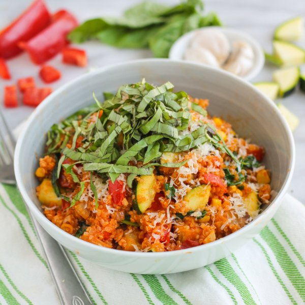

Quinoa "Risotto" with Garden Veggies, Basil & Parmesan

Total Time
35 min
Nutrition (Per Serving)
614.2 kcalCalories
29.2 gProtein
73.8 gCarbs
26.6 gFat
Full nutrition table
| Calories | 614.2 kcal |
| Total fat | 26.6 g |
| Saturated fat | 7.4 g |
| Trans fat | 0.2 g |
| Cholesterol | 19.3 mg |
| Sodium | 140.7 mg |
| Carbohydrates | 73.8 g |
| Fiber | 17.7 g |
| Sugars | 24.4 g |
| Protein | 29.2 g |
| Potassium | 2551.6 mg |
| Calcium | 196.2 mg |
| Iron | 8 mg |
| Vitamin A | 2788.4 IU |
| Vitamin C | 159.9 mg |
| Vitamin D | 5.4 IU |
Cookware
Ingredients
- 2 (5 oz) pkgsbaby spinach
- 16 fl ozchicken or vegetable broth
- 1eggplant
- 1 small pkgfresh basil
- 1 cupfrozen corn
- 4 clovesgarlic
- 4 ozParmesan cheese
- 1 cupquinoa
- 2red bell peppers
- 1 mediumred onion
- 6tomatoes
- 3 (8 oz) canstomato sauce
- 2 mediumzucchini squash
- extra virgin olive oil
- salt
Steps
- In a medium saucepan, combine quinoa and broth. Bring to a boil. Reduce heat to low, cover, and cook for 15 minutes. Remove from heat and let stand, covered, for 5 minutes.1 cup quinoa
16 fl oz (2 cups) chicken or vegetable broth - Meanwhile, wash and dry the fresh produce. (Skip the spinach if it came pre-washed.)1 eggplant
6 tomatoes
2 red bell peppers
2 medium zucchini squash
1 small pkg fresh basil
2 (5 oz) pkgs baby spinach - Trim ends and medium dice eggplant. Transfer to a medium bowl, add salt, and toss to coat; set aside.1 tsp salt
- Medium dice tomatoes and place in a large bowl.
- Seed and medium dice bell peppers; add to the bowl with the tomatoes.
- Trim ends and medium dice zucchini; add to the bowl with the tomatoes.
- Preheat a large pot over medium heat.
- Peel and mince onion and garlic.1 medium red onion
4 cloves garlic - Once the pot is hot, add oil and swirl to coat the bottom.¼ cup extra virgin olive oil
- Add onion and garlic. Stirring frequently, cook until onion begins to soften, 2-3 minutes.
- Using a clean towel or paper towel, squeeze the eggplant to release excess moisture. Add eggplant to the pot along with the chopped veggies, corn, tomato sauce, and salt. Cook, stirring occasionally, until veggies begin to soften, about 15 minutes.1 cup frozen corn
3 (8 oz) cans tomato sauce
1 tsp salt - Meanwhile, finely grate Parmesan.4 oz Parmesan cheese
- Pick basil leaves off the stems, roll up crosswise, and thinly slice into ribbons.
- Add spinach to the pot in handfuls, waiting for the spinach to wilt slightly before adding the next handful. Add quinoa and half of the Parmesan; stir to combine.
- To serve, divide the risotto between bowls and garnish with remaining Parmesan and basil. Enjoy!